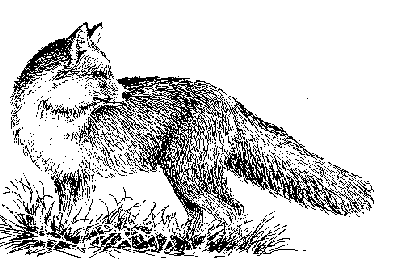

|
Mission Statement

The
purpose of the Hickory Creek Hunt is to provide traditional American-style
riding to hounds by maintaining a pack of foxhounds and the country over
which to follow them.
Fundamental
to the Hunt is its devotion to sportsmanship, hound work, horsemanship,
and country life. It proceeds within the American foxhunting tradition,
which is older than the republic, elegant in its simplicity, and speaks
to the present with the purity of its form.
There
are countless organizations devoted to leisure activities with and without
horses and dogs, but there are very few foxhunts. At HCH, foxhunting is
about foxhunting. Everything we do reflects this. Its prevailing personalities
are the country, the game, and the hounds.
It
is also significant that change is afoot affecting land use, our connection
to the countryside, and our relationship with animals. We must pay attention
to what we care for or it may be taken from us.
A
Message From the Masters
Over
the years, foxhunting has had to contend with various challenges: outsiders
who have wanted to impose their values on those who love the sport; urban
sprawl that has eaten up hunt country; and the fast pace of modern life
that cuts into the time that individuals can devote to foxhunting. Despite
these challenges, foxhunting in North America has not only shown great
resilience, it has prospered. There are more recognized hunts today than
ever before. In a world where the countryside is changing everyday, foxhunting
plays a unique role as a steward of wildlife and the land.
The
Chase is Paramount to Foxhunting
Foxhunting
in North America is a sport about the chase, not the kill. The true foxhunter
rides across country behind a pack of hounds in order to hear and to watch
how, with the help of their huntsman, hounds follow the twisting and turning
trail of a hard running fox (or coyote) until he goes to ground or scent
fails. The contest between fox and hounds is "level". We don't mar it with
practices especially designed to kill foxes, such as bolting and digging
out foxes, stopping earths, or closing refuge holes.
Because
they can end the chase whenever they please, foxes and coyotes aren't afraid
of foxhounds. They frequently run from half an hour to an hour and a half
before calling it quits. Unless they make a mistake, which rarely happens,
foxes live to run another day. The accidental death of a straight-necked
fox is a calamity. Foxhunting in North America is not a blood sport. Anyone
attempting to saddle foxhunting with this falsehood must be promptly and
emphatically set straight. Familiarity with the facts is the way to influence
public opinion. Many humane societies and animal rights groups, not knowing
the facts, have distorted ideas about what foxhunting really is. Most Americans
understand that wild animals are an essential part of our ecology, and
are a national treasure. They must be made aware that those who provide
coverts (habitat) and feed for foxes, who protect them from being shot,
trapped, gassed and poisoned-namely foxhunters-are leaders in wildlife
conservation.
--
Alexander Mackay-Smith
Re-printed,
by kind permission, from "Chronicle Commentary," The Chronicle of the Horse,
Vol. LV, No.38, Friday, September 18, 1992
|